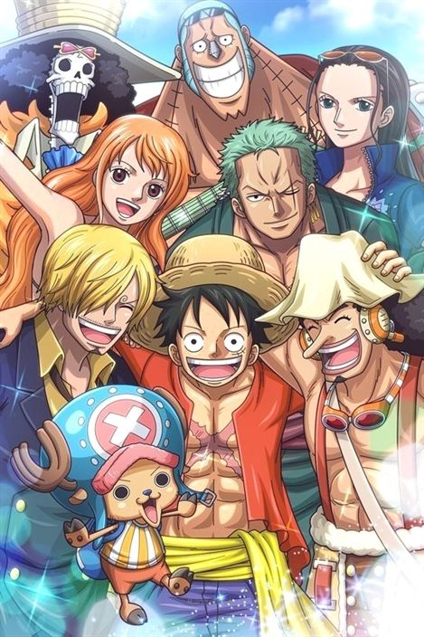
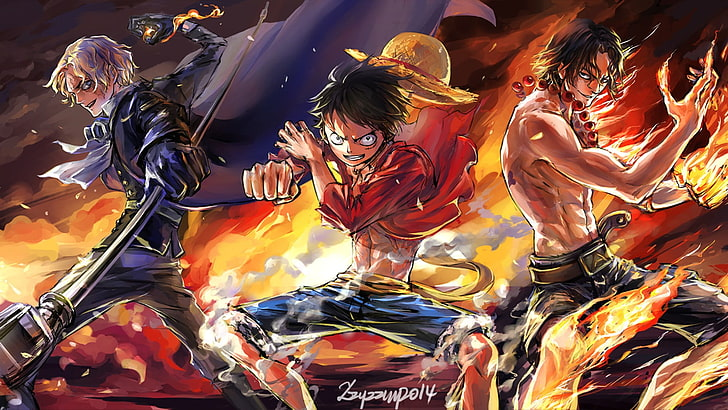
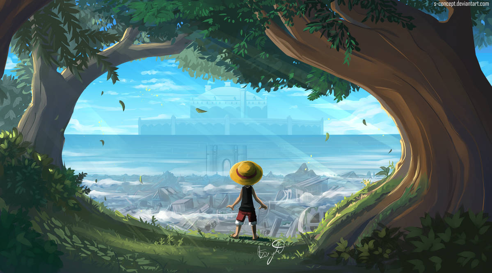
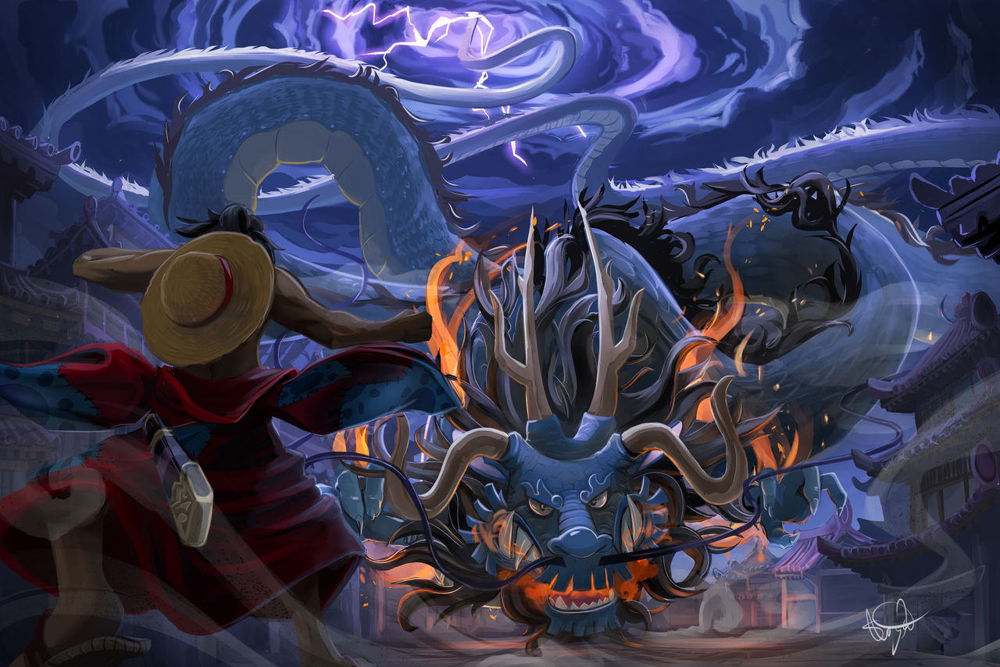

Đảo Hải Tặc
Tên Khác: Vua Hải Tặc; One Piece; OnePiece
Tác giả: Eiichiro Oda
Tình trạng: Đang Cập Nhật
Thống kê: -Like: 53145 -Tim: 126,338 -Lượt xem: 279,737,683
Thể loại : Action, Adventure, Comedy, Drama, Fantasy, Shounen, Supernatura
Tóm tắt :
One Piece là câu truyện kể về Luffy và các thuyền viên của mình. Khi còn nhỏ, Luffy ước mơ trở thành Vua Hải
Tặc.
Cuộc sống của cậu bé thay đổi khi cậu vô tình có được sức mạnh có thể co dãn như cao su, nhưng đổi lại, cậu
không
bao giờ có thể bơi được nữa. Giờ đây, Luffy cùng những người bạn hải tặc của mình ra khơi tìm kiếm kho báu
One
Piece, kho báu vĩ đại nhất trên thế giới. Trong One Piece, mỗi nhân vật trong đều mang một nét cá tính đặc
sắc
kết
hợp cùng các tình huống kịch tính, lối dẫn truyện hấp dẫn chứa đầy các bước ngoặt bất ngờ và cũng vô cùng
hài
hước
đã biến One Piece trở thành một trong những bộ truyện nổi tiếng nhất không thể bỏ qua. Hãy đọc One Piece để
hòa
mình
vào một thế giới của những hải tặc rộng lớn, đầy màu sắc, sống động và thú vị, cùng đắm chìm với những nhân
vật
yêu
tự do, trên hành trình đi tìm ước mơ của mình.
Chap 1

Do đã chệch khỏi cuộc đời đã được lắp đặt sẵn đường ray nên tôi quyết định ra biển.
Bởi vì tôi đã nghĩ đại dương xanh thẳm trải dài đến vô tận kia chính là thế giới mà mình thật sự sinh ra.
Thế giới của cuộc phiêu lưu mà tôi luôn khao khát từ khi còn thơ ấu. Thế giới của giấc mơ mà tôi chỉ có thể
ngắm nhìn thông qua quyển sách trên tay. Tôi của hiện tại đã ở thế giới đó.
Hoang đảo có một cây dừa. Ánh mặt trời chói chang. Bãi cát trắng. Bao tử trống rỗng. Tất cả đều là thật.
Chỉ có âm thanh của con sóng êm dịu và giọng nói của hải đảo đánh dấu từng giờ yên ả.
Tôi có một ước mơ từ khi còn nhỏ rằng một ngày nào đó tôi sẽ thử viết lên một cuốn Phiêu lưu ký.
Nếu làm thì tôi dự định mình sẽ viết một cuốn sách giống như cuốn "Brag Men". Đó là cuốn sách yêu thích nhất của
tôi.
Cuốn sách đã tóm tắt sổ nhật ký mà Louis Arnote, một nhà thám hiểm cổ xưa, đã viết. Chương về "Litte Garden",
hòn đảo mà người khổng lồ sinh sống, rất nổi tiếng.
Chap 2

Gã đó ngay thẳng cúi chào và hai mắt chúng tôi chạm nhau. Lời chào hỏi đó không thích hợp trên hoang đảo này chút nào.
"Tên của tôi là Ace. Tôi đang đi dạo trên bờ biển này. Rất vui được gặp anh"
Gã đó tự giới thiệu. Cái mũ màu cam của hắn thật chói mắt. Khi tôi vừa nhíu mắt lại và ngước lên thì hắn đã ngồi xuống.
Tôi nhận thấy tầm mắt của chúng tôi ngang nhau. Tên trẻ tuổi đó còn có những đốm tàn nhang trên mặt. Có lẽ hắn trạc tuổi tôi.
Tôi cảm thấy dường như cuốn phiêu lưu ký và âm thanh của những con sóng rất thích hợp với cơ thể rắn chắc của hắn.
Đó là cuộc gặp gỡ đầu tiên của tôi với Portgas D.Ace.
Tôi bất ngờ đến nỗi không nói thành lời. Không thể tin là tôi còn có thể gặp được người khác ở đây.
Từ giây phút nhìn lướt qua bóng dáng hắn, trong não tôi đã nổi lên hai chữ "cứu viện".
Gã đó tự xưng mình là Ace – Không, vị cứu tinh đó đã mở miệng nói.
"Xin lỗi vì sự đường đột này, nhưng thuyền của tôi đã hỏng mất rồi. Cậu làm ơn giúp tôi với"
"Cậu cũng chung cảnh ngộ với tôi hả!"
Aaaaaaaaaaaaaa, tôi ôm đầu hét lên.
Đại dương rộng lớn thế này vậy mà chúng tôi lại trôi dạt lên cùng một hoang đảo và cùng một thời điểm sao? Có bao nhiêu xác xuất cho chuyện đó vậy?
Chap 3

"... Thuyền của tôi cũng hỏng bởi cơn bão hôm trước rồi. Hầu hết hàng hóa cùng con thuyền đã tặng cho Davy Jones cả. Vì trong cơn bão đột nhiên tôi muốn làm việc tốt ấy mà"
Môi tôi đã trở nên khô khốc và rỉ máu. Đã lâu rồi tôi mới nói chuyện với người khác.
Davy Jones là một tên hải tặc cổ xưa. Truyền thuyết nói rằng hắn đã bị ác quỷ nguyền rủa và đến tận bây giờ hắn vẫn đang sống dưới đáy biển.
Nói cách khác nghĩa là những thứ chìm xuống biển, thuyền và kho báu đều trở thành đồ của hắn.
"Ra là vậy... Xem ra chúng ta gặp nạn cùng nhau rồi..."
Gã mặt tàn nhang nói vậy và cười sảng khoái. So với những người trôi dạt trên biển khác thì hắn ta trông khá ngớ ngẩn.
Tôi đã cảm thấy tức giận trước bộ dạng đó của Ace. Ở hoàn cảnh này mà hắn còn tươi cười được nữa.
Không, chuyện đó cũng dễ hiểu thôi. Hắn có lẽ không biết gì về sự đáng sợ của hòn đảo này. Hắn là kẻ mới trôi dạt vào đây. Kẻ mới trôi dạt là gì nhỉ. Tư duy của tôi dần trở nên không hiểu nổi, chắc do đói và khát chăng.
"Tôi... dạt vào đây được 3 ngày rồi..."
Khẽ khàng nhưng chắc nịch, tôi lầm bầm nói.
Sao nào, tôi đã sống sót suốt 3 ngày rồi đó. Cậu có thể bắt chước không. Tôi thốt ra câu trên, lẫn trong đó là cảm giác như đang ưỡn ngực tự mãn.